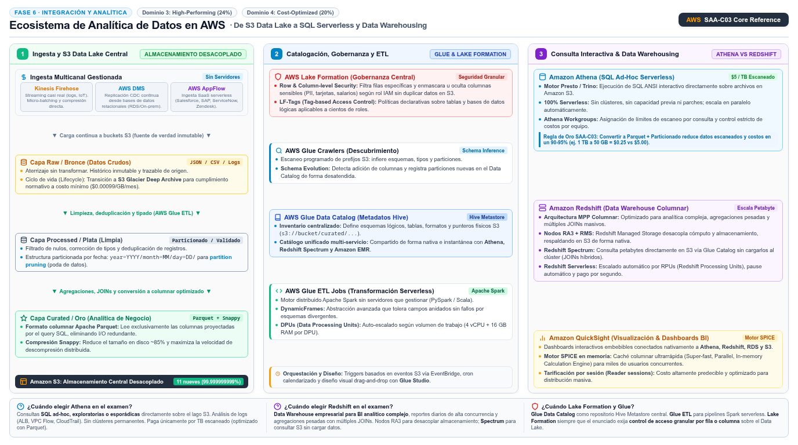

Analytics: Glue, Athena, Redshift, Lake Formation, QuickSight y OpenSearch AWS Analytics Services
El pipeline del data lake moderno — S3, catálogo, SQL serverless y warehouse — y la decisión de examen: Athena para explorar, Redshift para martillar.
Piensa en una gran biblioteca: los datos crudos llegan a estanterías gigantes (S3), pero sin un catálogo nadie encuentra nada. AWS Glue es el bibliotecario: descubre los datos, infiere sus esquemas y los registra en el Data Catalog, además de ejecutar los trabajos de limpieza y transformación (ETL) que ordenan las colecciones. Amazon Athena es el lector que consulta la biblioteca sin montar ninguna infraestructura: SQL ad-hoc sobre S3, serverless y pagando solo por lo que consulta. Amazon Redshift es la sala de análisis intensivo: un data warehouse columnar para BI pesado.
Alrededor de la tríada trabajan tres servicios que el examen menciona como piezas de gobierno y presentación: AWS Lake Formation añade la capa de permisos finos sobre el catálogo y el lake; Amazon QuickSight convierte los datos en dashboards de BI; y Amazon OpenSearch Service cubre búsqueda e índices y el análisis de logs. La pregunta de examen no es "describe each service": es qué servicio encaja en qué eslabón del pipeline y, sobre todo, la decisión Athena vs Redshift. Esta página recorre el flujo completo de extremo a extremo y termina en esa tabla de decisión.

year=YYYY/month=MM/day=DD/) para permitir poda de particiones (partition pruning); y la Capa Curated/Oro consolida los datasets de analítica y negocio transformados al formato columnar optimizado Apache Parquet con compresión Snappy, reduciendo el volumen de almacenamiento hasta un 85-90% y acelerando radicalmente la velocidad de lectura analítica al proyectar únicamente las columnas consultadas. Panel 2 (Catalogación, Gobernanza y ETL Serverless): AWS Glue Crawlers inspeccionan periódicamente los prefijos de S3 para inferir automáticamente esquemas, tipos y particiones, detectando su evolución sin intervención humana; estos esquemas lógicos se registran en el AWS Glue Data Catalog, repositorio central unificado y compatible con Apache Hive Metastore que expone tablas y bases de datos lógicas sobre los archivos de S3 a múltiples motores de cómputo (Athena, Redshift Spectrum, EMR). La transformación de datos entre zonas se ejecuta mediante AWS Glue ETL Jobs, un motor distribuido serverless basado en Apache Spark con escalado automático por DPUs (Data Processing Units) y soporte de DynamicFrames para manejar esquemas divergentes sin interrupciones. A su vez, AWS Lake Formation proporciona gobernanza y seguridad centralizada sobre el catálogo y el lake mediante control de acceso granular a nivel de fila (row-level security) y columna (column-level security), además de control de acceso basado en etiquetas (LF-Tags), permitiendo enmascarar u ocultar atributos sensibles (PII, tarjetas de crédito) según el rol de IAM sin necesidad de duplicar datos en S3. Panel 3 (Consulta Interactiva y Data Warehousing): Amazon Athena ofrece consultas SQL interactivas (ANSI) 100% serverless basadas en Presto/Trino directamente sobre los datos en S3 Curated, sin infraestructura ni mantenimiento y con facturación de $5.00 por TB escaneado (minimizada drásticamente en un 90-95% al combinar formato Parquet con particionado, limitando el escaneo a pocos megabytes/gigabytes). En contraste, Amazon Redshift es el Data Warehouse columnar a escala de petabytes diseñado para cargas analíticas intensivas, reportes complejos de BI corporativo con JOINs masivos y alta concurrencia; incorpora arquitectura de nodos RA3 con Redshift Managed Storage (RMS) que desacopla cómputo de almacenamiento respaldado automáticamente en S3, capacidades de Redshift Spectrum para consultar petabytes en S3 Data Lake sin cargarlos al clúster, y Redshift Serverless para escalado dinámico en RPUs (Redshift Processing Units) con facturación por segundo. Finalmente, Amazon QuickSight provee visualización interactiva y cuadros de mando analíticos sobre Athena, Redshift, RDS y S3, impulsado por su motor de cálculo columnar en memoria SPICE (Super-fast, Parallel, In-memory Calculation Engine) y tarificación por sesiones de lector para distribución ejecutiva masiva costo-eficiente.El data lake en S3 y el catálogo de Glue
Todo empieza en S3 como data lake: los datos crudos aterrizan en buckets — vía Firehose, jobs de Glue o cualquier productor. El problema no es guardarlos: es que S3 no conoce su contenido; no hay tablas ni esquemas. AWS Glue resuelve la mitad del problema con sus crawlers: conectan con el almacén de datos, infieren automáticamente el esquema y lo integran en el Glue Data Catalog — el inventario técnico de todas tus bases de datos y tablas. La documentación oficial destaca que Glue descubre y conecta más de 70 fuentes distintas y que el catálogo se consulta de inmediato con Athena, EMR y Redshift Spectrum: una vez catalogado, el dato de S3 ya es una tabla con nombre, columnas y tipos.
La otra mitad del trabajo es preparar los datos para análisis, y ahí entran los Glue jobs: ETL serverless sobre un motor Apache Spark, con Glue Studio para componer las transformaciones visualmente, triggers por evento o calendario, y escalado automático de workers según la carga. El patrón de madurez del lake — presente en casi toda pregunta de esta familia — organiza S3 en zonas: una zona cruda (raw) con los datos tal cual llegan y una zona curada (processed) con datos limpios y ya transformados a formatos analíticos. Glue es el motor que mueve los datos de una zona a la otra.
Athena: SQL serverless sobre S3
Amazon Athena es un servicio de consulta interactivo que analiza datos directamente en S3 con SQL estándar: apuntas Athena a tus datos, ejecutas ad-hoc queries y obtienes resultados en segundos — todo sin infraestructura que planificar ni gestionar, pagando solo por las consultas que ejecutas. Athena escala automáticamente ejecutando las consultas en paralelo, incluso con datasets grandes y consultas complejas; también soporta notebooks con Apache Spark. La documentación lo posiciona para análisis interactivo sobre el data lake, y las integraciones naturales son el Glue Data Catalog (para los metadatos) y QuickSight (para visualizar los resultados).
El patrón CSV a Parquet: la pregunta que nunca falta
Aquí cae una de las preguntas más repetidas del SAA-C03. Los CSV son row-based: para responder "¿cuál es el promedio de la columna X?", Athena debe escanear todas las filas completas, aunque solo te interesen dos campos. Parquet es columnar y comprimido: los datos se almacenan agrupados por columna, así que la misma consulta lee solo las columnas implicadas y los bloques comprimidos ocupan menos bytes. Menos datos escaneados significa consultas más rápidas y facturas menores — y como Athena cobra por datos escaneados, la conversión se paga sola. El patrón completo del enunciado: datos llegan en CSV a la zona cruda → un job de Glue los transforma y comprime a Parquet en la zona curada → Athena consulta la zona curada. Si además particionas por fecha (p. ej. año/mes/día en prefijos de S3) y el catálogo registra las particiones, el engine puede saltarse bloques enteros: la tríada Parquet + compresión + particionado es la respuesta de "optimize query performance and cost" para consultas sobre S3.
Redshift: el warehouse columnar
Amazon Redshift es el data warehouse de AWS: un almacén columnar optimizado para consultas analíticas (agregaciones, joins grandes, reporting de BI) sobre datos estructurados y modelados, con SQL estándar. A diferencia de Athena — que cada consulta levita sin infraestructura — Redshift tiene su propia capacidad: puedes operar clusters aprovisionados con los tipos de instancia y almacenamiento que definas, o Redshift Serverless para pagar solo por el uso sin gestionar clusters, opción que la documentación oficial compara directamente. Para consultas sobre datos que aún viven en S3 sin cargarlos, existe Redshift Spectrum, que la documentación de Glue cita junto a Athena y EMR como consumidor del catálogo: el warehouse consulta el lake cuando lo necesita.
| Criterio | Amazon Athena | Amazon Redshift |
|---|---|---|
| Modelo | Serverless: consulta S3 sin infraestructura | Warehouse: clusters o serverless, capacidad dedicada |
| Datos | Permanecen en S3 — el lake es el almacén | Datos cargados y modelados en el warehouse; Spectrum consulta S3 |
| Pago | Por consulta — datos escaneados | Por capacidad aprovisionada o uso serverless |
| Fuente | SQL estándar sobre el Glue Data Catalog | SQL con motor MPP optimizado para BI |
| Elegir cuando… | Exploración ad-hoc, logs, datos poco frecuentes, sin administrar nada | BI pesado y recurrente: joins grandes, dashboards con latencia baja |
sobre S3?"} B -->|"sí, esporádicas"| AT["Athena
serverless SQL"] B -->|"no"| C{"¿BI pesado con joins
y reporting recurrente?"} C -->|"sí"| RD["Redshift
warehouse columnar"] C -->|"no"| D{"¿Búsqueda de texto
y exploración de logs?"} D -->|"sí"| OS["OpenSearch
búsqueda e índices"] classDef navy fill:#EFF6FF,stroke:#3B82F6,stroke-width:2px,color:#1E293B classDef green fill:#F0FDF4,stroke:#10B981,stroke-width:2px,color:#1E293B classDef amber fill:#FFF7ED,stroke:#F59E0B,stroke-width:2px,color:#1E293B class A navy class B,C,D amber class AT,RD,OS green
Bases de datos de propósito específico en el ecosistema analítico
El lake no es la única respuesta: algunos datos viven mejor en bases especializadas que el examen menciona como alternativas proposito-específicas. Amazon DocumentDB es la base documental compatible con MongoDB — cargas de contenido semiestructurado, catálogos y perfiles que la app lee y escribe con la API que ya conoce. Amazon Neptune es la base de grafos: cuando la pregunta gira sobre relaciones (redes sociales, detección de fraude por patrones de conexión, motores de recomendación), el modelo de nodos y aristas consulta en milisegundos lo que en SQL requiere joins recursivos. La señal del enunciado para ambas: datos con esa forma concreta y "latencia baja" en consultas de ese patrón; si el dato es tabular y masivo, sigue siendo Redshift o el lake.
Lake Formation, QuickSight y OpenSearch: gobierno, vitrina y buscador
AWS Lake Formation es la capa de gobierno del lake: la documentación oficial de Glue lo define como una capa de autorización con fine-grained access control sobre los recursos del Glue Data Catalog — es decir, permisos a nivel de base de datos, tabla e incluso columna, centralizados para todo el lake. En el examen, la señal es "grant access to specific columns" o "centralize data lake permissions": en lugar de repartir bucket policies de S3 y políticas de Glue por todas partes, defines en Lake Formation quién ve qué del catálogo, y los servicios de consulta (Athena, Redshift) respetan esa autorización.
Amazon QuickSight es el servicio de BI para el último eslabón: dashboards interactivos, análisis y visualizaciones que se conectan a tus fuentes — Athena y Redshift entre las naturales — y se pueden embeber en tus propias aplicaciones. Si el enunciado termina en "visualize the results in dashboards for business users", QuickSight es la pieza. Amazon OpenSearch Service opera clusters de OpenSearch (el derivado open-source de Elasticsearch, del que soporta hasta la versión 7.10) como servicio gestionado: un domain es un cluster con sus tipos de instancia y almacenamiento; AWS detecta y reemplaza nodos fallidos. Sus casos oficiales son búsqueda, análisis de logs, monitoreo de aplicaciones en tiempo real y clickstream — y su nodo típico en el pipeline es ser destino de Firehose para los logs, o la respuesta cuando la pregunta exige búsqueda de texto por índices invertidos, algo que SQL no hace bien.
| Si el enunciado dice… | La respuesta apunta a… |
|---|---|
| "query data in S3 with SQL, no servers" | Athena (+ Glue Data Catalog para metadatos) |
| "improve Athena performance and reduce cost" | Convertir a Parquet + compresión + particionado (job de Glue) |
| "catalog data and infer schemas automatically" | Glue crawlers → Data Catalog |
| "complex joins, large dashboards, predictable BI workload" | Redshift (o Redshift Serverless) |
| "column-level permissions on the data lake" | Lake Formation sobre el Glue Data Catalog |
| "interactive dashboards for business users" | QuickSight |
| "search logs by keyword / full-text search service" | OpenSearch Service |
- El pipeline canónico: S3 → Glue crawlers/catalog → ETL → Athena/Redshift → QuickSight.
- Glue = ETL serverless (Spark) + Data Catalog compartido con Athena, EMR y Redshift Spectrum.
- Athena = SQL serverless sobre S3, pago por consulta (por datos escaneados).
- El patrón CSV → Parquet con compresión y particionado acelera y abarata las consultas del lake.
- Redshift = warehouse columnar para BI pesado; Serverless quita la gestión de clusters; Spectrum consulta S3 desde el warehouse.
- Lake Formation centraliza permisos finos (tabla/columna) sobre el catálogo del lake.
- QuickSight para dashboards; OpenSearch para búsqueda, logs y monitoreo en tiempo real.
- INT-12 AWS Glue — What is (serverless ETL, catalog) · docs.aws.amazon.com/glue/latest/dg/what-is-glue.html
- INT-13 Amazon Athena — What is (S3 SQL queries) · docs.aws.amazon.com/athena/latest/ug/what-is-athena.html
- INT-14 AWS Lake Formation — What is (data lake governance) · docs.aws.amazon.com/lakeformation/latest/dg/what-is-lake-formation.html
- INT-15 Amazon QuickSight — Welcome (BI visualization) · docs.aws.amazon.com/quicksight/latest/user/welcome.html
- INT-16 Amazon OpenSearch Service — What is (search, analytics) · docs.aws.amazon.com/opensearch-service/latest/developerguide/what-is.html
- DB-16 Amazon Redshift — What is (data warehouse, columnar) · docs.aws.amazon.com/redshift/latest/mgmt/overview.html
- DB-17 Amazon DocumentDB — What is (MongoDB compatible) · docs.aws.amazon.com/documentdb/latest/developerguide/what-is.html
- DB-18 Amazon Neptune — What is (graph database) · docs.aws.amazon.com/neptune/latest/userguide/intro.html